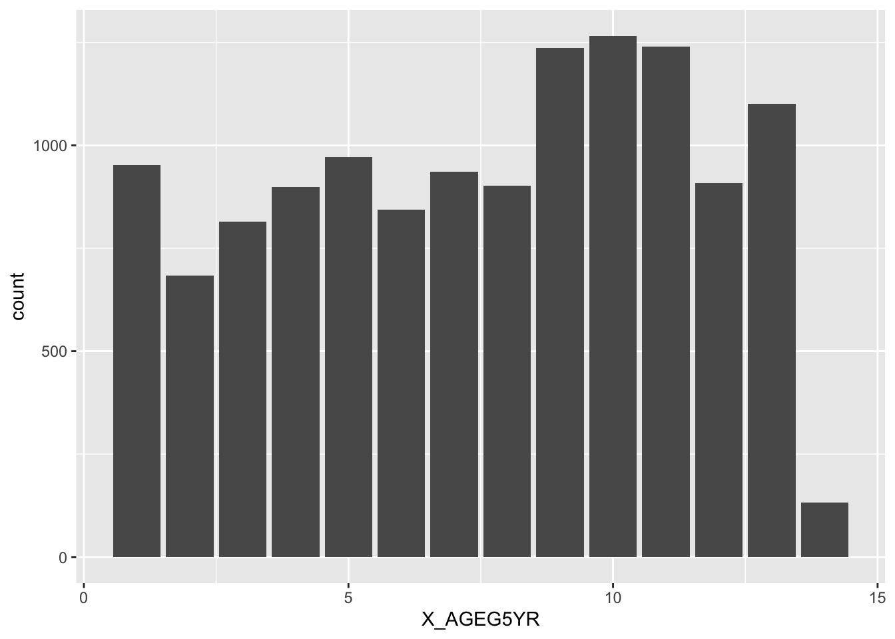
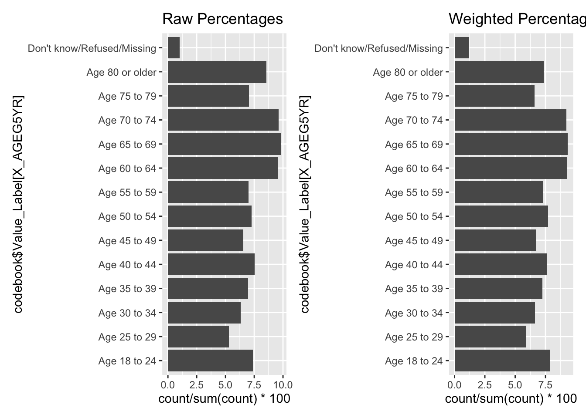

# weighted frequencies are estimates for all of Nebraska# shows frequencies, not a distributionbrfss |>ggplot(aes(x = X_AGEG5YR)) +geom_bar()

# from codebook: codebook <-data.frame(Value =1:14, Value_Label =c("Age 18 to 24", "Age 25 to 29", "Age 30 to 34", "Age 35 to 39", "Age 40 to 44", "Age 45 to 49", "Age 50 to 54", "Age 55 to 59", "Age 60 to 64", "Age 65 to 69", "Age 70 to 74", "Age 75 to 79", "Age 80 or older", "Don't know/Refused/Missing"))p1 <- brfss |>ggplot(aes(x = codebook$Value_Label[X_AGEG5YR])) +geom_bar(aes(y =after_stat(count/sum(count)*100))) +coord_flip() +ggtitle("Raw Percentages")p2 <- brfss |>ggplot(aes(x = codebook$Value_Label[X_AGEG5YR], weight = X_LLCPWT2)) +geom_bar(aes(y =after_stat(count/sum(count)*100))) +coord_flip() +ggtitle("Weighted Percentages")p1+p2

Non responses are included in the age distribution as a separate level.
Is the age of Nebraskans distributed significantly different from the nationally reported age distribution? (You could run a Chi-square test of homogeneity using chisq.test) Make sure to interpret the results.
National sample from the codebook:
Using ellmer with anthropic and prompt: “from the file at path”USCODE23_LLCP_021924.HTML” in the working directory extract the table for _AGEG5YR”
# no need to run this over and over again, just create the data set once# Load required librarieslibrary(rvest)# Read the HTML filehtml_content <-read_html("USCODE23_LLCP_021924.HTML")# Extract all tables from the HTMLtables <- html_content %>%html_table(fill =TRUE)# Look for the table containing _AGEG5YRageg5yr_table <-NULLfor(i in1:length(tables)) {if(any(grepl("_AGEG5YR|AGEG5YR", tables[[i]], ignore.case =TRUE))) { ageg5yr_table <- tables[[i]]break }}write.csv(ageg5yr_table, "national-age.csv", row.names =FALSE)
Writing the result in a file and reading it back in:
Rows: 14 Columns: 5
── Column specification ────────────────────────────────────────────────────────
Delimiter: ","
chr (1): Value Label
dbl (3): Value, Percentage, Weighted Percentage
num (1): Frequency
ℹ Use `spec()` to retrieve the full column specification for this data.
ℹ Specify the column types or set `show_col_types = FALSE` to quiet this message.